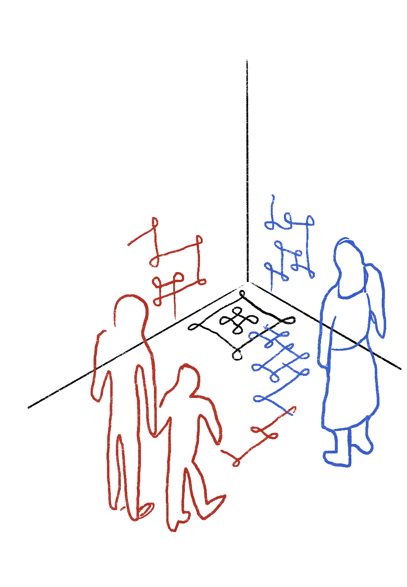
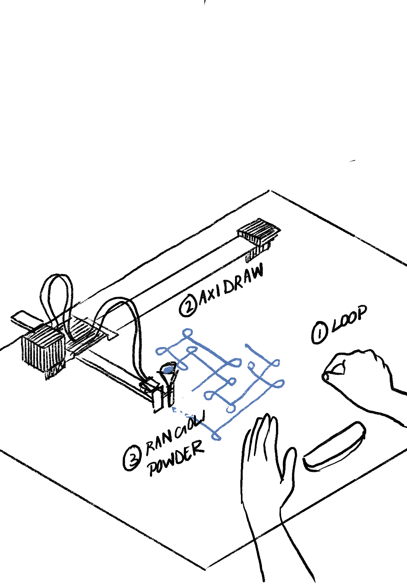
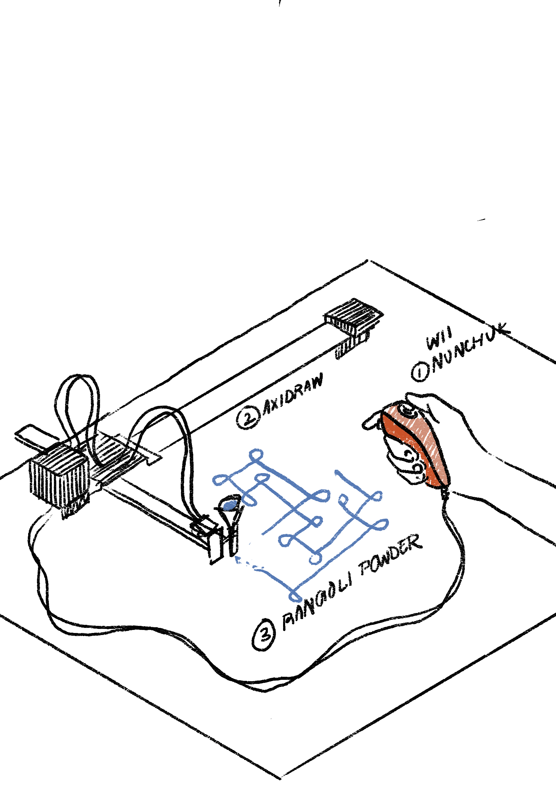

WHAT'S NEXT
SYMBOLS
ACTIONS

SYSTEMS
Community Workshops
Through Mrs. Vijaya Mohan
Attend and interview a few participants in rangoli-making community workshops.
Mathura Govindarajan
Creative Technologist
A creative technologist based in Bangalore. Runs a non-profit called Paper Crane Labs where they often interact with students on art and creative projects.
Dr. Vijaya Nagarajan
Expert on Theology/Religious Studies
An associate professor who has written extensively on kolam, including the book "Feeding a Thousand Souls," which explores the intersection of kolam, ecology, and spirituality.
RESERACH PLAN
DECEMBER
Objectives:
- Develop and finalize Experiment 1: Actions, Symbols, and Objects.
- Create a repository of gestures that are used in Kolam Drawing.
- Explore how kolams can result from the artist's real-time interactions using alternate tangible interfaces like a Wii Nunchuck or a Leap Motion Controller.
- Investigate how improvisational hand movements in kolam-making can be captured and translated into digital inputs.
- Schedule and prepare for interviews with Vijay Mohan, Mathura, and Vanitha Didi.
Tasks and Timeline:
- Week 1 (Dec 1-7):
- Design and Prototype Development:
- Finalize the conceptual design of Experiment 1.
- Complete repository of hand gestures! Documentation on website.
- Gather all necessary materials: Axidraw, Wii Nunchuck/Leap Motion Controller, Raspberry Pi/Arduino, rice powder, 3D-printed funnel, etc.
- Start developing the software to translate controller inputs into Axidraw movements.
- Interview Preparation:
- Draft interview questions focusing on traditional kolam-making processes and how their integrity can be preserved even through translation into different mediums.
- Design and Prototype Development:
- Week 2 (Dec 8-14):
- Technical Integration:
- Complete the initial prototype of the system.
- Test the input-output flow from the controller to the Axidraw.
- Schedule Interviews:
- Reach out to Vijay Mohan, Mathura, and Vanitha Didi to schedule interviews.
- Confirm dates, times, and formats (in-person or virtual).
- Technical Integration:
- Week 3 (Dec 15-21):
- Prototype Refinement:
- Refine the software and hardware based on initial tests.
- Explore Symbols and how the form of the Kolam can change.
- Fix algorithm for drawing kolams, with an emphasis that exact replication isn't the goal! What new forms can emerge from this new medium?
- Conduct Interviews:
- Interview Vijay Mohan and Mathura from PCL.
- Zoom/video documentation + transcripts.
- Prototype Refinement:
- Week 4 (Dec 22-28):
- Documentation, Website and Publication:
- Updayte website visual language + content.
- Begin publication design of the Catalogue of Making.
- Interview Continuation:
- Interview Vanitha Didi.
- Compile and analyze interview data, capture in publication.
- Documentation:
- Document all developments, challenges, and solutions encountered.
- Reflect on interview findings and integrate insights into the project.
- Documentation, Website and Publication:
JANUARY
Objectives:
- Install and test Experiment 1 in a collaborative setting with a kolam artist. Basically, explore how an artists would interpret this new medium.
- Begin development of Experiment 2: Systems.
- Explore the concepts of place identity and the silent dialogue between artist and tradition in a hybrid physical-digital context.
Tasks and Timeline:
- Week 1 (Jan 1-7):
- Installation Preparation:
- Secure a venue and time for the Experiment 1 installation. (Potential Options: HDB void deck?)
- Coordinate schedules with any participating kolam artist.
- Prepare the installation setup (more portable the better).
- Installation Preparation:
- Week 2 (Jan 8-14):
- Experiment 1 Execution:
- Facilitate collaborative kolam-making sessions with the artists using the Experiment 1 setup.
- Observe and document the interactions and outcomes: how do the artists adapt?
- Collect feedback on their experience and perceptions.
- Experiment 1 Execution:
- Week 3 (Jan 15-21):
- Data Analysis:
- Analyze observations and feedback from the sessions.
- Identify patterns, challenges, and areas for improvement.
- Update website and publication.
- Begin Experiment 2 Planning:
- Define the scope and objectives based on insights from Experiment 1.
- Finalise Project Description.
- Data Analysis:
- Week 4 (Jan 22-31):
- Experiment 2 Development:
- Design the conceptual framework for Experiment 2.
- Begin technical development: software for projection mapping? hardware setup with Axidraw and projectors? Decide if I'm using axidraw again.
- Consider: how technology can mediate the silent dialogue between artist and tradition? Can this also potentially take place through AR/VR or something crowd-sourced?
- Experiment 2 Development:
February
Objectives:
- Install and test Experiment 2 in a public space with kolam artists, potentially at the Indian Heritage Center or an HDB void deck.
Tasks and Timeline:
- Week 1 (Feb 1-7):
- Finalize Experiment 2 Setup:
- Complete all technical components of Experiment 2.
- Test the system to ensure reliability and responsiveness.
- Venue Confirmation:
- Secure necessary permissions for installation at the chosen location.
- Plan logistics for equipment transport and setup.
- Finalize Experiment 2 Setup:
- Week 2 (Feb 8-14):
- Installation Setup:
- Install Experiment 2 at the selected venue.
- KIV artist interaction and public engagement.
- Collaborative Sessions:
- Invite kolam artists to engage with the installation.
- Document their interactions and the evolving kolam designs.
- Open the installation to the public.
- Observe how visitors interact with the space and the technology.
- Collect feedback from both artists and the public.
- Installation Setup:
- Week 3 (Feb 15-21):
- Documentation and Updating Website:
- Update publication and website.
- Documentation and Updating Website:
- Week 4 (Feb 22-28):
- Data Analaysis and Reflections:
- Analyze the impact of the installations so far.
- Assess how effectively the experiment facilitated a conversation between tradition and technology.
- More Documentation:
- Organize all data, recordings, and observations for inclusion in the final Catalogue of Making.
- Data Analaysis and Reflections:
March
Objectives:
- Prepare for the final presentation and documentation of experiments.
- Print and finish draft of Catalogue of Making.
- Set up installations for exhibition at the Singapore Art Museum (SAM).
Tasks and Timeline:
- Week 1 (Mar 1-7):
- Data Synthesis:
- Review all collected data from Experiments 1 and 2.
- Identify key findings, themes, and insights.
- Catalogue Development:
- Update ayout and structure of the Catalogue of Making.
- Include narratives, images, diagrams, and reflections.
- Data Synthesis:
- Week 2 (Mar 8-14):
- Final Documentation:
- Complete writing and editing of all textual content.
- Curate visual elements: photographs, sketches, and screenshots.
- SAM Coordination:
- Transportation and setup.
- Final Documentation: